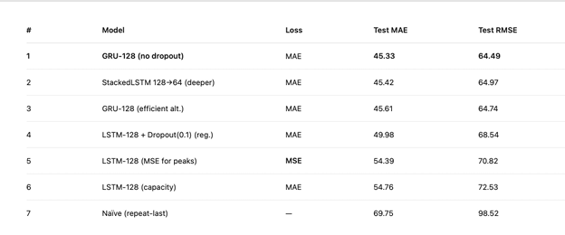

Air Quality Forecasting
Using Deep Learning
Built a deep learning model to forecast PM2.5 air pollution levels and improve short-term forecasting accuracy for environmental planning.

Business Context
Accurate air quality forecasting supports public health planning, environmental monitoring, and operational response to pollution events. Short-term prediction is especially valuable where rapid decisions are needed.
Problem Statement
Baseline forecasting approaches did not provide sufficient short-term accuracy for PM2.5 prediction, limiting their usefulness for planning and risk response.
Objective
Develop a deep learning forecasting model that improves short-term PM2.5 prediction performance compared with baseline methods.
Approach
I tested multiple recurrent neural network models using different architectures and lookback windows. Performance was evaluated with MAE and RMSE, and the final model was selected based on out-of-sample forecasting results.
Key Insights
- Deep learning outperformed baseline forecasting for short-term prediction
- Model design choices matter: architecture and lookback period significantly affected results
- Accuracy declines at longer horizons, making the model especially useful for near-term planning
- Forecasting error improved materially, with MAE reduced from about 69 to 45
Recommendations
- Use the model for short-term planning where performance is strongest
- Retrain the model regularly as new data becomes available
- Pair forecasts with operational thresholds for practical use
- Continue feature testing to improve horizon-level stability
Business Impact
This project improved forecasting accuracy and created a more reliable analytical foundation for environmental monitoring and short-term public health planning.
Tools Used
Python, Deep Learning, GRU / LSTM, Time Series Forecasting